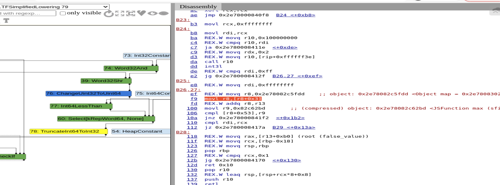
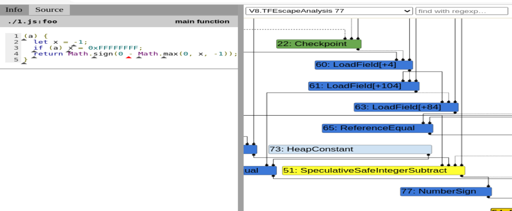
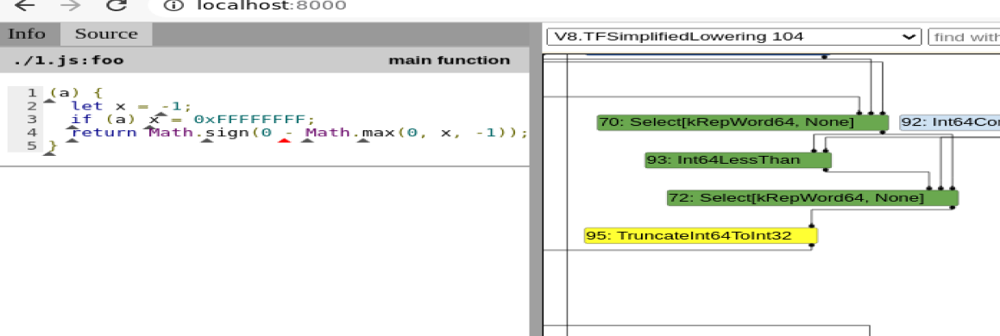
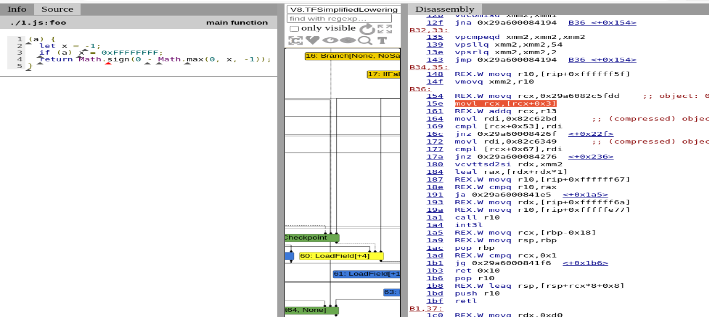

4月14日@frust93717815又从twitter上爆出来了一个chrome renderer RCE exp，这个漏洞修复的commit是
，在4月13日更新的chrome 90版本并未修复。
漏洞分析
poc
1 | function foo(b) { |
漏洞的根源在于v8为了优化到极致，在SimplifiedLowing phase中如果节点操作数类型是singned32或者unsigned32会把SpeculativeXXX节点转化为TruncateInt64ToInt32节点，对应的代码如下
1 | /src/compiler/representation-change.cc |
对应生成的节点图及汇编码如下，对应最终生成的movl是mov命令符的32位比较形式，l表示long(32-bit integer or 64-bit floating point)。但是这样的优化会在一定情况下导致typer错误。

漏洞利用
如上给出的poc中经过jit优化后结果本应是false但实际运行却是true，我们可以利用这两者的差异构造一个OOB array。
例如如下代码
1 | function foo(a) { |
在SimplifiedLowing phase中SpeculativeSafeIntegerSubtract节点会转化为TruncateInt64ToInt32节点，转化前

转化后

对应生成的汇编使用的操作符是32位操作符movl，导致这里LoadField节点获得的是一个32位长度的值，

即这里jit compler会认为Math.max(0,0xffffffff,-1)等价于Math.max(0,0xffff,-1)，导致得到错误的结果0。使用Math.max(0, x, -1)的值做为new Array的长度，再使用array.shift使array.length-1即可得到一个实际长度为0但可访问范围为0xffffffff的OOB array。
总结
已经连续两天有人爆出chrome 的renderer RCE exp了，chrome每次修复漏洞时附加poc的操作看来值得商榷。